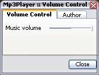

Raven/RvMp3Player
RvMp3Player is simple mp3 and ogg player for UT. It's open source so feel free to modify it, but if you want to release modified version, you have to compile it with different name, so it won't conflict with main version. I've a plan to port it to Unreal 1 as well.
Installation
Copy:
- RvMp3Player.dll
- RvMp3Player.int
- RvMp3Player.u
to your UnrealTournament system directory. If you don't have newest fmod.dll (3.74!!), copy it too. Otherwise mp3player won't work.
Usage
In editor open RvMp3Player.u (in Actor Browser), then add RMp3PlayerController (as many as you wish). Then configure RMp3PLayerController:
- MusicDirectory - music directory (not used)
- bMuteModMusic - will mute original UT music if true
- Song - mp3 name (with extension e.g. 01.mp3)
- Action - action (used only when triggered):
- AC_PlayOnStart - will play music on startup
- AC_Stop - will stop music
- AC_Play - will play music (important, if mp3 is loaded, use AC_Switch action)
- AC_Switch - will switch to new track
- AC_ShutDown - will shutdown mp3player (not used)

volume control |
Credits
Almost everything is done by me - Raven, but this player is finally released thanks to:
- Enigma - Unicode→ANSI conversion (big thx men).
- UArchitect - for help with many problems.
- [Sixpack]-Shambler - he told me how to compile native code.
- UnrealSP.org community - for feedback.
- FMOD - because of leaving fmod.dll free for non commercial use.